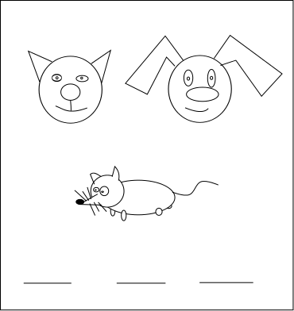

Система дидактических принципов программы «Школа 2100…»
Статус программы - экспериментальная.
1) Принцип деятельности - ребенок не получает готовое знание, а добывает его в результате собственной деятельности (является не объектом , а субъектом деятельности).
2) Принцип непрерывности - преемственность между всеми ступенями обучения на уровне методологии, содержания и методики.
3) Принцип целостного представления о мире - содержание образования должно отражать язык и структуру научного знания, изучать явления не разрозненно, а во взаимной связи.
4) Принцип минимакса предполагает выделение двух уровней - максимального, который определяется зоной ближайшего развития детей данной возрастной группы, и необходимого минимума, то есть государственного стандарта знаний. Принцип минимакса заключается в следующем: школа обязана предложить ученику содержание образования на максимальном уровне, а ученик обязан усвоить это содержание на уровне, не ниже минимального.
5) Принцип психологической комфортности означает снятие всех стрессообразующих факторов учебного процесса, создание в школе и на уроке спокойной, доброжелательной атмосферы.
6) Принцип вариативности - развитие у учащихся вариативного мышления, то есть способности к систематическому перебору вариантов и выбору оптимального варианта.
7) Принцип творчества - максимальная ориентация на творческое начало в учебной деятельности школьников, приобретение ими собственного опыта творческой деятельности.
Перечисленные дидактические принципы систематизируют идеи традиционной дидактики и обеспечивают целенаправленное решение задач развивающего обучения в общеобразовательной школе.
Внимание! Данные принципы - всего лишь официально декларируемые принципы, не более. Реальность такова, что программа обучения прямо противоположна описываемым здесь принципам.
Учебники программы 2100 созданы так, что ребенку не предоставляется полная информация о изучаемом предмете. Ребенок ничего не сможет изучить самостоятельно или дома с родителями. На 20 учебников в классе прилагается одна книга учителя, в которой как раз и написано, что нужно делать в том или ином задании. Даже для того, чтобы сделать домашние задания, ученику необходимо записать задание в классе или запомнить, что нужно сделать.
Пример. Выполните задание:

Ну как, решили? Нет? А почему? Потому что не знаете что тут нужно делать. А что нужно делать - написано в маленькой книжечке у учителя, но никак не в учебнике. Никакого "принципа целостного представления о мире" и "принципа непрерывности" здесь нет. Здесь мы видим искуственное фрагментирование знания, причем фрагментирование достаточно простых вещей.
"Принцип деятельности" сводится к тому, что в учебнике нет ни намека на правила. Изредка встречаются какие-то утверждения, причем написанные странным, примитивным языком.
Общее оформление учебников вызывет культурный шок. Такое впечатление, что оформление делали укуренные негры-фотошоперы за еду. Омерзительные картинки людей, которые не знают, что такое красиво, не умеют рисовать и вообще непонятно что делают в профессии.